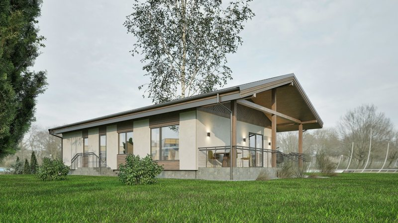
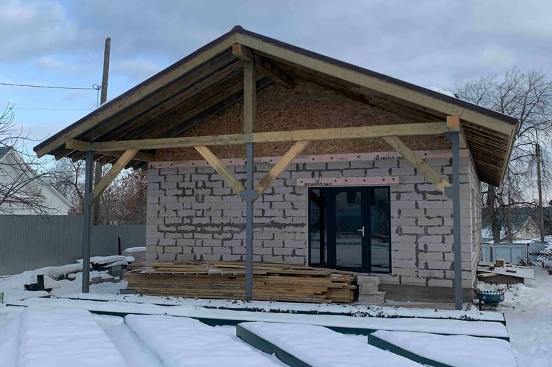
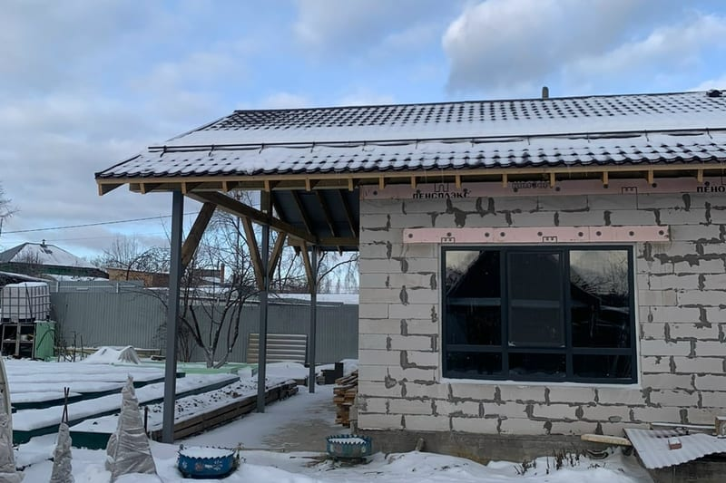
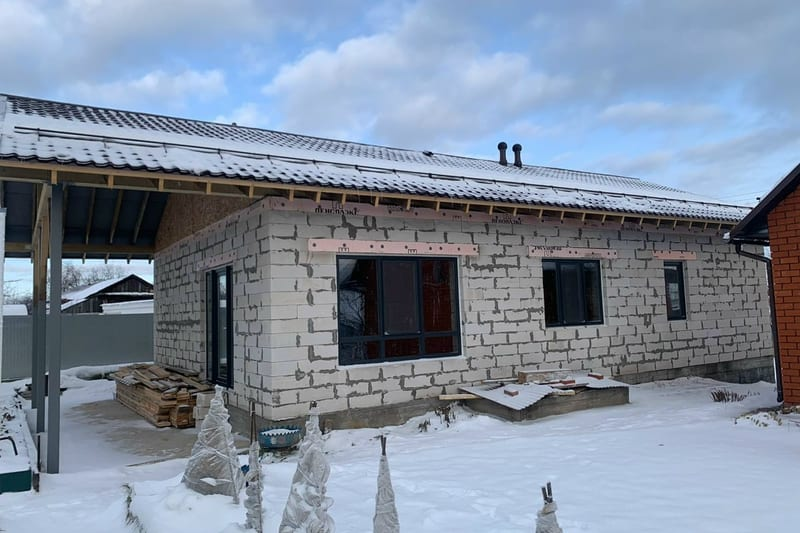
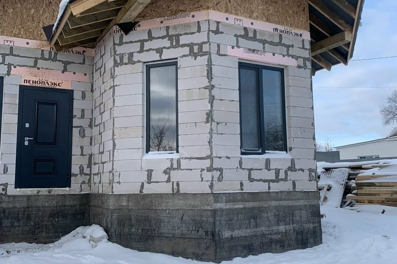
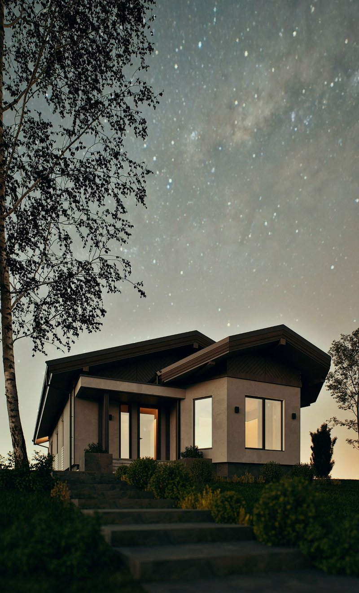
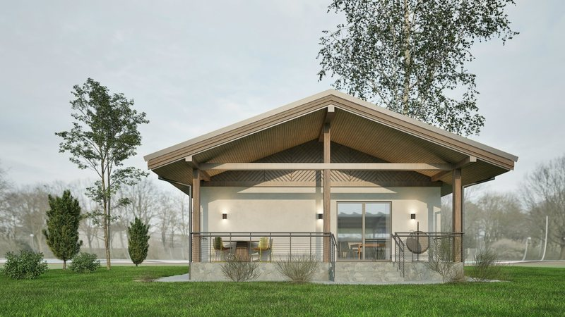

Клиент пришёл с готовым проектом двухэтажного дома, когда
фундамент уже был залит. Именно фундамент стал главным
ограничением — и точкой, от которой пришлось строить заново
всю архитектуру.

Дом после адаптации проекта
Ситуация
Один из клиентов обратился с готовым проектом двухэтажного дома.
Проект был куплен, участок выбран, фундамент залит. Но после
этого стало очевидно: реализовать дом в исходном виде на этом
основании не получится.
Остановить стройку и начать заново — самый простой путь только
на бумаге. На практике это означает новые затраты и потерянное
время. Мы пошли другим путём.
Задача
Нужно было адаптировать проект под одноэтажное здание и при этом
учесть все пожелания заказчика и ограничения, которые уже
существовали на участке. Главное ограничение — готовый фундамент:
новая архитектура должна была с ним считаться.
Это не косметическая правка. Двухэтажный дом и одноэтажный —
разные объёмы, разные планировки и разные фасады. Проект
пришлось пересобрать почти целиком.

Кровля и стены

Кладка и окна

Вид сбоку

Угол и фронтон
Что изменилось
Вместо двух этажей появился один — с новой планировкой, новыми
фасадами и переработанной кровлей. Объём дома стал ниже
и спокойнее, а внутреннее пространство распределилось иначе.
Решения привязывались к существующему фундаменту: именно он
задавал габариты и оси, от которых выстраивалась вся остальная
архитектура. Учесть пожелания заказчика и ограничения готового
основания было непросто, но в этом и состояла задача.

Вечерний вид

Дом днём
Результат
Дом реализован в одноэтажном варианте. Проект сохранил участок
и фундамент, а архитектура получила новое решение — более
спокойное и соответствующее одноэтажному объёму.
Такая адаптация — отдельная услуга: переработать готовый проект
под реальные условия стройки. Иногда это единственный способ
не начинать заново.